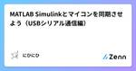

MATLAB 関連の更新をまとめた
RSSフィードを配信しています
最近の更新
1/9 (金)
高速度域から停止までのブレーキ挙動をSIMでの確認方法
MATLABタグが付けられた新着記事 - Qiita
ライダー重心移動とブレーキ挙動の関係について 重心移動のみを考慮した場合 ライダーの重心移動のみを考慮した状態で、 高速度域から停止までのブレーキ挙動をSIMで確認した。 その結果、 ピッチ角度にはわずかな影響が見られる 車速の減速挙動には、ほとんど影響しない とい...
2日前
1/8 (木)
レーンチェンジ制御(車線変更)は **LQR制御 × PID制御** の組み合わせで解決 MATLABタグが付けられた新着記事 - Qiita
レーンチェンジ制御は LQR制御 × PID制御 の組み合わせで解決した話 概要 レーンチェンジ時に、グローバル座標系（右手系）において横方向へ移動した後、安定する制御を作成することを目的とした。 最初に試した方法 最初は、 グローバル座標の目標値と現在値の差分を入力...
3日前
1/7 (水)
車体重量は適切に、Scopeは邪魔、タイヤモーメントは制御の敵 MATLABタグが付けられた新着記事 - Qiita
バイクシミュレーションでの気づきメモ（重量・Scope・タイヤモーメント） シミュレーションを進める中で、いくつか重要な気づきがありました。 ※本記事中の数値や条件は、挙動確認用に設定した例であり、 実際の製品・実車・業務データとは関係ありません。 発見したこと 車...
4日前
1/6 (火)
複雑なモデルでもできるPIDゲインの簡単な求め方
MATLABタグが付けられた新着記事 - Qiita
応答オプティマイザーでロール角度狙いのPID制御を作った話 PID制御で目標数値を欲張り禁止！！！！ 応答オプティマイザーを使って ロール角度を目標値に合わせるPID制御を作成した。 以前は、SIMを手動で回しながらPIDゲインを調整していた。 もちろん、PIDの各ゲイン...
5日前
1/4 (日)
MATLABの本気がみたい Zennの「MATLAB」のフィード
はじめに MATLABを使い始めて、もう何年になるやろ。 MATLABには感謝してる。行列計算は書きやすいし、Simulinkは制御系の人には必須やし、信号処理のツールボックスも充実してる。「とりあえず動く」安心感は、本業に集中したい人間にとってありがたいねん。 けど、長年使ってると「ちょっとな〜」と思うことも増えてきた。 今日はそんな話を、ゆるく書いてみるわ。 その１：並列計算、なんで有料なん？ 16コアあるのに1コアしか動かへん ある日、計算を回してた。100通りの条件で、それぞれ5分かかる処理。 100 × 5分 = 500分 = 8時間20分 「まあ一晩回しとくか」...
7日前
12/30 (火)

MATLAB Simulinkとマイコンを同期させよう（USBシリアル通信編） Zennの「MATLAB」のフィード
MATLAB Simulinkとマイコンを同期させよう（USBシリアル通信編） 概要 STM32マイコンで実行されている制御アルゴリズムの内部変数（デューティ比など）を，USBシリアル（UART）経由でMATLAB/Simulinkに送信し，リアルタイムでScope表示・解析するための環境構築手順をまとめます． 将来的な「マイコン制御＋MATLABモータモデル」の同期シミュレーション（PIL/HIL）に向けた第一歩となる，**「データのパケット化」と「Simulink側での同期処理」**に焦点を当てます． 環境 MATLAB / Simulink: 2024b In...
12日前